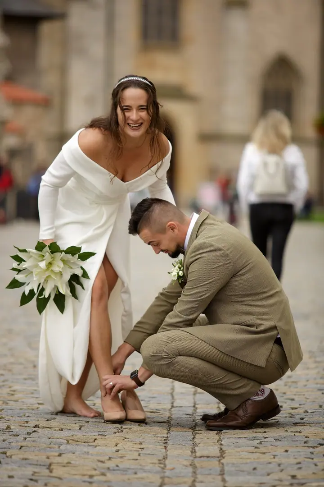
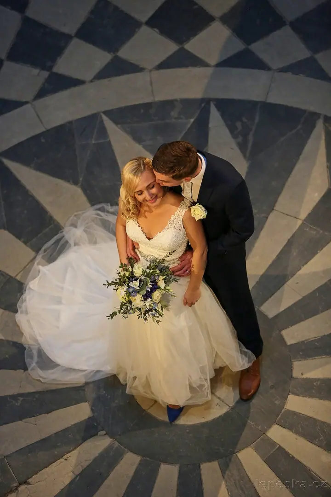
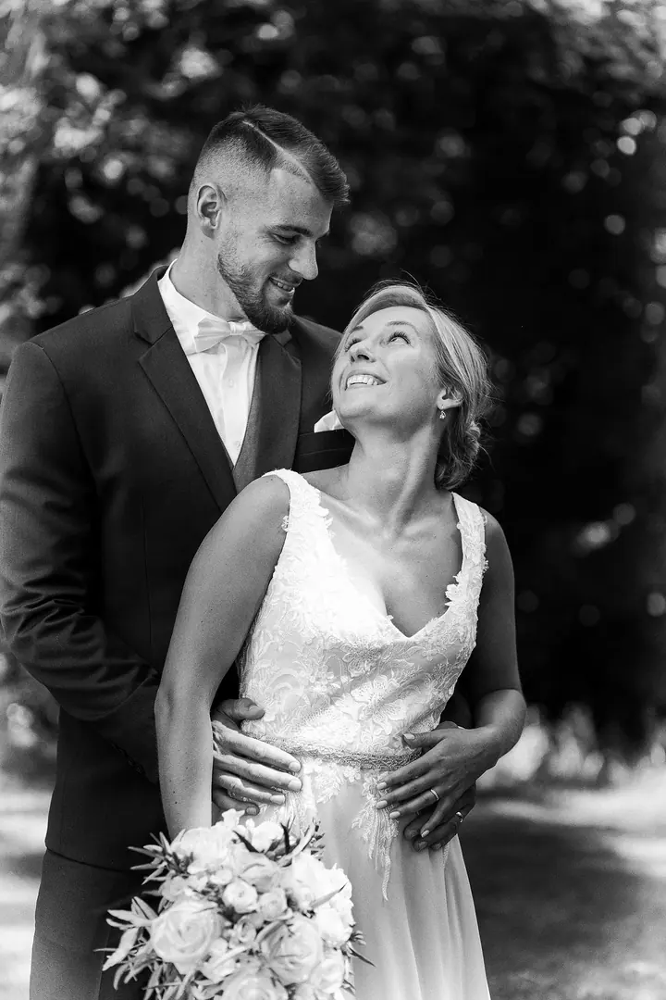
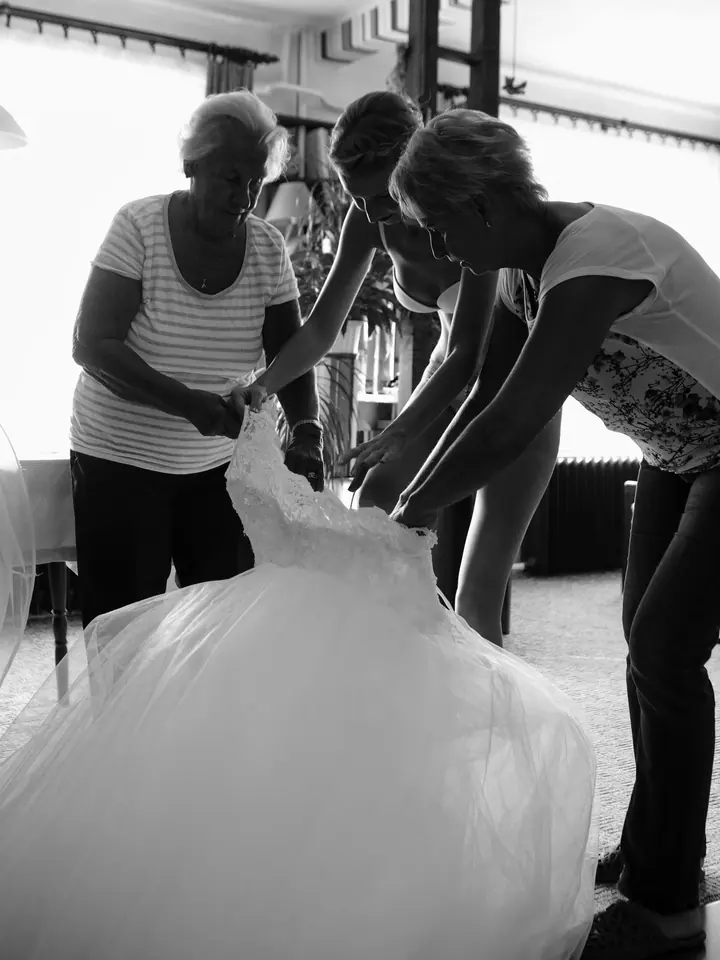
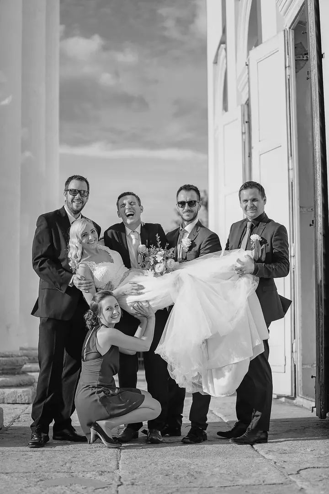
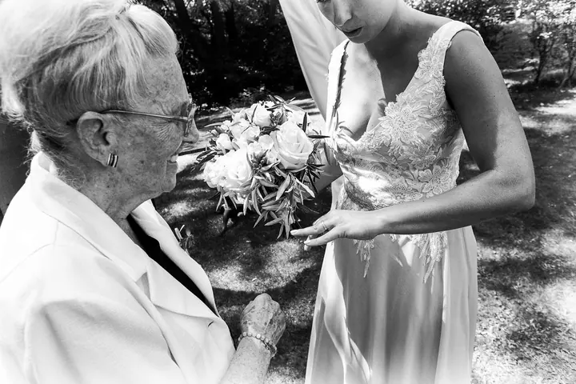

Reportážní svatební fotografie
Zachycuji příběh celého vašeho dne, včetně momentů, které unikly vaší pozornosti. Rád nafotím i stylizované záběry, které mají své místo ve svatebním albu.





Jmenuji se Miroslav Lepeška a fotím svatby v Kutné Hoře, na zámku Kačina i kdekoli jinde v Česku. Během dne sleduji velké i malé události, ze kterých se skládá váš příběh. Fotografie je pro mě příležitost k setkání se zajímavými lidmi.
Více o mně
„Fotografie je pro mne příležitost k setkání se zajímavými lidmi.“
— Miroslav Lepeška
Zachycuji příběh celého vašeho dne, včetně momentů, které unikly vaší pozornosti. Rád nafotím i stylizované záběry, které mají své místo ve svatebním albu.
Fotografie ze svatby na filmový materiál, vyvolané mokrou cestou. Zásadní momenty na film zachytí další fotograf, rozsah a množství domluvíme předem.
Fotokoutek, který svatební hosty pobaví a fotky si odnesou rovnou vytištěné. Nacením ho podle vašich požadavků.
Vedle svateb se věnuji i portrétní fotografii. Focení je pro mě hlavně příležitost potkat zajímavé lidi.
Focení je pro mě práce a řemeslo, ale zároveň způsob a styl života. Fotím od dětství a svatební a portrétní fotografii se věnuji naplno už řadu let. Ročně fotím kolem deseti svateb, tak akorát, abych se mohl na každou plně soustředit, od příprav přes samotný den až po zpracování a předání fotek.
Svatby fotím reportážně. Chci zachytit příběh vašeho dne tak, abych nenarušil, co prožíváte. Dobrá svatební fotka podle mě vypovídá o tom, kdo, kde a co dělal. Rád nafotím i stylizované záběry, které mají své místo ve svatebním albu.
Žiji v Kutné Hoře a odtud přijedu za vámi. Obvykle fotím sám, na větších svatbách se můžete potkat i s mými spolupracovníky. Než se rozhodnete, potkejme se. Fotograf je člověk, který bude součástí vaší svatby, a měli byste si spolu sednout lidsky.
Napište mi e-mail nebo zavolejte. Uveďte termín, místo a rámcovou představu o velikosti svatby.
Rád vás poznám předem. Projdeme plán vašeho dne a zjistíme, co ještě je potřeba zařídit, aby svatba proběhla hladce.
Celý den sleduji vaši svatbu a fotím reportážně, nenápadně a bez režírování. Na přání nafotíme i stylizované portréty.
Fotografie pečlivě zpracuji a předám vám je v elektronické podobě. Pokud budete chtít, připravím i fotoknihu.
První hodina stojí 8 500 Kč a zahrnuje dopravu do 100 km, zpracované fotografie v elektronické podobě a předsvatební schůzku. Každá další hodina stojí 2 000 Kč a účtuji skutečný čas. Na rezervaci termínu je záloha 50 %.
Nejčastěji v Kutné Hoře, na zámku Kačina, v Praze, v Třemošnici, na zámku Zruč nad Sázavou a na Vysočině. Po dohodě přijedu na jakékoli svatební místo v Česku.
Ať bude počasí jakékoli, zajímavé fotografie se podaří udělat vždy. Jak říká indiánské přísloví: Nejhorší počasí je žádné.
Obvykle fotím sám, ale může nás přijet i více. Cenu za druhého fotografa, fotokoutek nebo videoklip vám spočítám podle vašich požadavků.